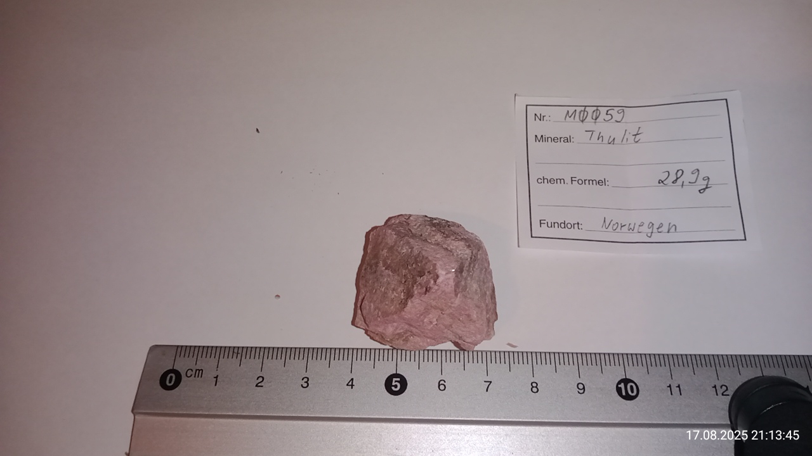

Meine Webseite
Mineralien von Q bis T
[Startseite][Artikel][Astronomie][Spieleentwicklung][GAIA][Rechtliches]
{[Mineralien][Fossilien][Kunst][Leipzig][Biologisches]}
-[A-D][E-H][I-L][M-P][Q-T][U-X][Y-andere]-
Rubin
| Katalognummer: | M0021 |
| Gewicht: | 5,8g |
| angebener Fundort: | Tansania |
| Erwerbungsjahr: | 2021 |
Weitere Informationen:
https://www.mineralienatlas.de/lexikon/index.php/MineralData?mineral=Rubin, abgerufen am 17.08.2025
https://de.geologyscience.com/Edelstein/Rubin, abgerufen am 17.08.2025
Bilder:

Schörl
| Katalognummer: | M0087 |
| Gewicht: | 1,1g |
| angebener Fundort: | Pakistan |
| Erwerbungsjahr: | 2020 |
Weitere Informationen:
https://www.mineralienatlas.de/lexikon/index.php/MineralData?mineral=Sch%C3%B6rl, abgerufen am 24.09.2025
https://de.geologyscience.com/Edelstein/schwarzer-Turmalin-Sch%C3%B6rl, abgerufen am 24.09.2025
Bilder:


Smaragd
| Katalognummer: | M0015 |
| Gewicht: | 2,5g |
| angebener Fundort: | Pakistan |
| Erwerbungsjahr: | 2021 |
Weitere Informationen:
https://www.mineralienatlas.de/lexikon/index.php/MineralData?mineral=Smaragd, abgerufen am 16.08.2025
https://de.wikipedia.org/wiki/Smaragd, abgerufen am 16.08.2025
Smaragd in Glimmerschiefer
| Katalognummer: | M0009 |
| Gewicht: | 17g |
| angebener Fundort: | Brasilien |
| Erwerbungsjahr: | 2021 |
Weitere Informationen:
https://www.mineralienatlas.de/lexikon/index.php/MineralData?mineral=Smaragd, abgerufen am 16.08.2025
https://www.mineralienatlas.de/lexikon/index.php/RockData?rock=Glimmerschiefer, abgerufen am 16.08.2025
Bilder:


Sonnenstein
| Katalognummer: | M0096 |
| Gewicht: | 55,7g |
| angebener Fundort: | Indien |
| Erwerbungsjahr: | - |
Weitere Informationen:
https://www.mineralienatlas.de/lexikon/index.php/MineralData?mineral=Sonnenstein, abgerufen am 27.12.2025
https://www.steine-und-minerale.de/mineralien/s/sonnenstein.html, abgerufen am 27.12.2025
Bilder:


Spessartin
| Katalognummer: | M0042 |
| Gewicht: | 1,6g |
| angebener Fundort: | China |
| Erwerbungsjahr: | 2021 |
Weitere Informationen:
https://www.mineralienatlas.de/lexikon/index.php/MineralData?mineral=Spessartin, abgerufen am 16.08.2025
https://www.steine-und-minerale.de/mineralien/s/spessartin.html, abgerufen am 16.08.2025
Bilder:
Staurolith
| Katalognummer: | M0058 |
| Gewicht: | 11,8g |
| angebener Fundort: | Madagaskar |
| Erwerbungsjahr: | 2021 |
Weitere Informationen:
https://www.mineralienatlas.de/lexikon/index.php/MineralData?mineral=Staurolith, abgerufen am 08.03.2025
https://de.geologyscience.com/Mineralien/Silikatmineralien/Staurolith, abgerufen am 08.03.2025
Bilder:

Stilbit
| Katalognummer: | M0062 |
| Gewicht: | 48,9g |
| angebener Fundort: | Indien |
| Erwerbungsjahr: | 2021 |
Weitere Informationen:
https://www.mineralienatlas.de/lexikon/index.php/MineralData?mineral=Stilbit, abgerufen am 09.03.2025
https://www.steine-und-minerale.de/mineralien/s/stilbit.html, abgerufen am 09.03.2025
Bilder:
Schungit
| Katalognummer: | M0061 |
| Gewicht: | 60,1g |
| angebener Fundort: | Spanien |
| Erwerbungsjahr: | 2021 |
Weitere Informationen:
https://www.mineralienatlas.de/lexikon/index.php/RockData?rock=Schungit, abgerufen am 09.03.2025
https://de.wikipedia.org/wiki/Shungit, abgerufen am 09.03.2025
Bilder:
Tausanit
| Katalognummer: | M0008 |
| Gewicht: | 4,8g |
| angebener Fundort: | Tansania |
| Erwerbungsjahr: | 2021 |
Weitere Informationen:
https://www.mineralienatlas.de/lexikon/index.php/MineralData?mineral=Tansanit, abgerufen am 16.08.2025
https://de.wikipedia.org/wiki/Tansanit, abgerufen am 16.08.2025
Thulit
| Katalognummer: | ;0059 |
| Gewicht: | 28,9g |
| angebener Fundort: | Norwegen |
| Erwerbungsjahr: | 2021 |
Weitere Informationen:
https://www.mineralienatlas.de/lexikon/index.php/MineralData?mineral=Thulit, abgerufen am 17.08.2025
https://de.geologyscience.com/Edelstein/Thulit/, abgerufen am 17.08.2025
Bilder:

Topas
| Katalognummer: | M0072 |
| Gewicht: | 2,4g |
| angebener Fundort: | Vietman |
| Erwerbungsjahr: | 2020 |
Weitere Informationen:
https://www.mineralienatlas.de/lexikon/index.php/MineralData?mineral=Topas, abgerufen am 09.03.2025
https://www.steine-und-minerale.de/mineralien/t/topas.html, abgerufen am 09.03.2025
Bilder:

Triplit
| Katalognummer: | M0068 |
| Gewicht: | 80g |
| angebener Fundort: | Agentinien |
| Erwerbungsjahr: | - |
Weitere Informationen:
https://www.mineralienatlas.de/lexikon/index.php/MineralData?mineral=Triplit, abgerufen am 09.03.2025
https://de.wikipedia.org/wiki/Triplit, abgerufen am 09.03.2025
Bilder:


Türkis
| Katalognummer: | M0012 |
| Gewicht: | 2,6g |
| angebener Fundort: | USA |
| Erwerbungsjahr: | 2021 |
Weitere Informationen:
https://www.mineralienatlas.de/lexikon/index.php/MineralData?mineral=T%C3%BCrkis, abgerufen am 16.08.2025
https://www.steine-und-minerale.de/mineralien/t/tuerkis.html, abgerufen am 16.08.2025
Aktualisiert: 27.12.2025